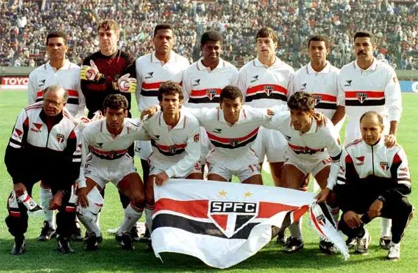

São Paulo FC
São Paulo FC
As Grandes Batalhas Mundiais
Conheça as campanhas detalhadas, as escalações lendárias e as histórias por trás do único clube brasileiro a conquistar o Tri Mundial de Clubes.
O Início da Dinastia
1992A Grande Final
- Data: 13 de dezembro de 1992
- Local: Estádio Nacional de Tóquio, Japão
- Adversário: FC Barcelona (Espanha)
- Placar: São Paulo 2 x 1 Barcelona (Ganhador: Raí 2x)
A Trajetória: O São Paulo de Telê Santana viajou ao Japão para enfrentar o "Dream Team" do Barcelona de Johan Cruyff. Após sair perdendo com um golaço de Stoichkov, o time não se abateu. Raí comandou a virada com um gol de barriga no primeiro tempo e uma magistral cobrança de falta na segunda etapa.
Os Titulares da Decisão

Gols & Momentos (Adicione seu Vídeo)
Coloque aqui o link do YouTube ou o arquivo do vídeo da final de 1992.
A Confirmação do Domínio
1993A Grande Final
- Data: 12 de dezembro de 1993
- Local: Estádio Nacional de Tóquio, Japão
- Adversário: AC Milan (Itália)
- Placar: São Paulo 3 x 2 Milan (Gols: Palhinha, Toninho Cerezo, Müller)
A Trajetória: Enfrentando a máquina italiana de Fabio Capello, o São Paulo provou que não era um milagre de uma noite só. Em um jogo épico de idas e vindas de placar, Müller garantiu a taça mundial com um gol surpreendente de calcanhar que bateu nas costas do goleiro Rossi a poucos minutos do fim da partida.
Os Titulares da Decisão

Gols & Momentos (Adicione seu Vídeo)
Coloque aqui o link do YouTube ou o arquivo do vídeo da final de 1993.
O Tri do Mineiro e Ceni
2005A Grande Final
- Data: 18 de dezembro de 2005
- Local: Estádio Internacional de Yokohama, Japão
- Adversário: Liverpool FC (Inglaterra)
- Placar: São Paulo 1 x 0 Liverpool (Gol: Mineiro)
A Trajetória: A defesa intransponível do São Paulo bateu de frente com o forte Liverpool. O volante Mineiro encontrou um buraco na zaga e tocou na saída do goleiro Reina. Depois do gol, o mundo parou para assistir ao milagre de Rogério Ceni em cobrança de falta de Steven Gerrard, consolidando sua lenda.
Os Titulares da Decisão

Gols & Momentos (Adicione seu Vídeo)
Coloque aqui o link do YouTube ou o arquivo do vídeo da final de 2005.